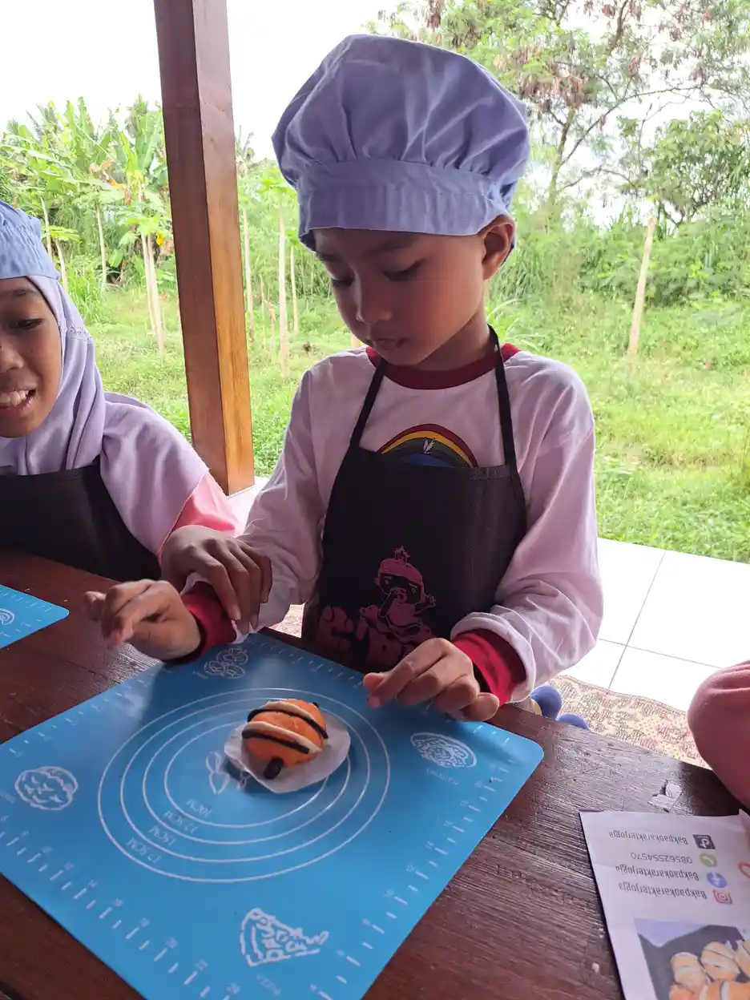

Stimulasi motorik halus adalah kegiatan terarah untuk melatih otot-otot kecil di tangan, jari, dan pergelangan anak beserta koordinasi mata-tangannya, sehingga ia mampu meraih, menjumput, memegang, dan pada akhirnya menulis. Keterampilan ini bukan bakat bawaan yang muncul sendiri, melainkan hasil ribuan pengulangan kecil sejak masa bayi. Anak yang tangannya terlatih lebih mudah memegang sendok, mengancingkan baju, dan memegang pensil dengan benar. Sebaliknya, anak yang jarang diberi kesempatan bereksplorasi dengan tangannya sering cepat lelah saat menulis dan gampang frustrasi. Kabar baiknya, stimulasi motorik halus tidak menuntut mainan mahal, karena sebagian besar bahannya sudah ada di dapur dan ruang keluarga.
Apa Itu Motorik Halus?
Motorik halus adalah kemampuan menggunakan otot-otot kecil, terutama di tangan, jari, dan pergelangan, untuk melakukan gerakan yang presisi. Berbeda dengan motorik kasar yang memakai otot besar untuk berlari, melompat, dan memanjat, motorik halus bekerja dalam skala kecil dan menuntut ketelitian.
Setiap kali anak memakai motorik halusnya, tiga komponen bekerja bersamaan:
- Kekuatan otot tangan. Kemampuan menggenggam, meremas, dan menahan benda tanpa cepat lelah.
- Ketangkasan jari. Kemampuan menggerakkan jari secara terpisah, misalnya menjumput hanya dengan ibu jari dan telunjuk.
- Koordinasi mata-tangan. Kemampuan mata memandu gerak tangan, misalnya memasukkan tali ke lubang manik.
Ketiganya berkembang bertahap dan saling menopang. Kalau kekuatan tangan belum cukup, ketangkasan jari sulit muncul. Kalau bahu dan badan belum stabil, tangan ikut goyah karena harus menahan tubuh. Itulah sebabnya latihan motorik kasar tetap penting sebagai fondasi. Lihat perbedaan motorik kasar dan halus serta motorik halus.

Mengapa Stimulasi Motorik Halus Penting
Motorik halus sering dianggap urusan sekolah semata, padahal dampaknya menyentuh hal-hal yang dipakai anak setiap hari.
Kemandirian Sehari-hari
Hampir semua keterampilan bantu diri bertumpu pada motorik halus: makan dengan sendok, minum dari gelas, membuka bungkus makanan, mengancingkan baju, menarik ritsleting, sampai memutar gagang pintu. Anak yang tangannya terlatih tidak perlu menunggu orang dewasa untuk urusan sesederhana itu, dan rasa mampu tersebut berpengaruh besar pada kepercayaan dirinya.
Kesiapan Menulis
Menulis adalah keterampilan motorik halus tingkat lanjut, bukan titik awal. Sebelum bisa memegang pensil dengan jari, anak perlu lebih dulu punya kekuatan genggam, kestabilan pergelangan, dan kemampuan memisahkan gerak jari. CDC mencatat kemampuan memegang krayon atau pensil di antara jari dan ibu jari, bukan dengan kepalan, sebagai keterampilan yang umumnya sudah dikuasai sebagian besar anak pada usia 4 tahun (CDC, Milestones by 4 Years).
Belajar Lewat Tangan
Anak kecil memahami dunia dengan menyentuh. Menuang, meremas, dan menyusun adalah cara otak membangun konsep tentang berat, tekstur, dan ruang.
Tahapan Motorik Halus Usia 0 sampai 1 Tahun
Pada tahun pertama, tangan bayi berubah dari kepalan pasif menjadi alat eksplorasi. CDC lewat program Learn the Signs. Act Early. menyusun daftar keterampilan yang umumnya sudah dikuasai sebagian besar anak, yaitu 75% atau lebih, pada usia tertentu.
- Sekitar 6 bulan: meraih untuk mengambil mainan yang diinginkan, memasukkan benda ke mulut untuk mengeksplorasinya, dan bertumpu pada tangan untuk menyangga badan saat duduk.
- Sekitar 9 bulan: memindahkan benda dari satu tangan ke tangan yang lain, serta memakai jari untuk menyapu makanan ke arah dirinya.
- Sekitar 12 bulan: menjumput benda kecil di antara ibu jari dan telunjuk, memasukkan benda ke dalam wadah seperti balok ke dalam gelas, dan minum dari gelas tanpa tutup ketika dipegangi.
Ide stimulasi: beri waktu tengkurap setiap hari untuk menguatkan bahu dan lengan, karena inilah fondasi tangan yang stabil. Tawarkan mainan dengan tekstur dan berat berbeda, mainkan cilukba dengan kain agar bayi belajar menarik, dan perkenalkan potongan makanan lunak yang bisa ia pegang sendiri ketika sudah siap.
Catatan keamanan: pada usia ini bayi memasukkan hampir semua benda ke mulut, jadi jauhkan benda kecil yang berisiko tersedak dan dampingi secara langsung.
Tahapan Motorik Halus Usia 1 sampai 2 Tahun
Ini masa anak jatuh cinta pada tiga aktivitas: memasukkan, mengeluarkan, dan menumpuk. Ia mengulanginya puluhan kali tanpa bosan, dan pengulangan itulah yang membangun keterampilan.
- Sekitar 15 bulan: memakai jari untuk menyuap makanan sendiri, mencoba memakai benda sesuai fungsinya seperti telepon, gelas, atau buku, serta menumpuk setidaknya dua benda kecil seperti balok.
- Sekitar 18 bulan: mencoret-coret, mencoba memakai sendok, minum dari gelas tanpa tutup meski kadang tumpah, dan membantu proses berpakaian dengan memasukkan lengan ke lubang baju atau mengangkat kaki.
Ide stimulasi: memasukkan bola kecil ke dalam kaleng bekas, menumpuk gelas plastik, membuka dan menutup wadah bertutup longgar, mencoret di kertas besar memakai krayon gemuk, serta memindahkan potongan buah dari mangkuk ke piring dengan tangan.
Pada tahap ini tumpah dan berantakan adalah bagian dari belajar, bukan tanda gagal. Siapkan alas plastik atau koran bekas supaya kamu tidak refleks melarang setiap kali ada yang jatuh.
Tahapan Motorik Halus Usia 2 sampai 3 Tahun
Tangan anak mulai bekerja sebagai tim. Satu tangan memegang, satu tangan bergerak. Kemampuan ini disebut koordinasi dua tangan dan menjadi kunci untuk hampir semua keterampilan berikutnya.
- Sekitar 2 tahun: makan dengan sendok, memegang sesuatu dengan satu tangan sambil memakai tangan yang lain (misalnya memegang wadah sambil membuka tutupnya), serta mencoba memakai sakelar, kenop, atau tombol pada mainan.
- Sekitar 30 bulan: memutar benda dengan tangan seperti memutar gagang pintu atau membuka tutup toples, melepas sebagian pakaiannya sendiri, dan membalik halaman buku satu per satu saat dibacakan.
Ide stimulasi: membuka dan menutup tutup botol berbagai ukuran, meremas spons basah di baskom, menempel stiker besar, meronce manik-manik besar dengan tali sepatu, bermain adonan, dan menyendok beras dari satu wadah ke wadah lain.
Meremas adonan sangat baik untuk kekuatan genggam karena melawan tahanan. Kalau anak masih memasukkan benda ke mulut, buat adonan dari tepung, garam, dan air agar tetap aman.
Tahapan Motorik Halus Usia 3 sampai 4 Tahun
Anak mulai menikmati hasil karyanya. Ia ingin gambarnya dilihat dan potongan kertasnya disimpan. Dorongan ini bisa dipakai untuk menjaga motivasi latihan.
- Sekitar 3 tahun: meronce benda seperti manik besar atau makaroni, memakai sendiri sebagian pakaian seperti celana longgar atau jaket, dan memakai garpu saat makan.
Ide stimulasi: menggunting kertas dengan gunting anak berujung tumpul, menjepit kapas memakai penjepit jemuran, menuang air dari teko kecil ke gelas, menyusun puzzle berkeping besar, menempel potongan kertas menjadi kolase, dan mengecap dengan potongan sayur yang dicelup pewarna makanan.
Catatan penting: tahan dulu keinginan membeli buku latihan menulis. Anak tiga tahun jauh lebih diuntungkan oleh mencoret bebas di bidang besar, misalnya kertas yang ditempel di dinding, dibanding mengisi garis putus-putus di buku kecil. Bidang tegak melatih pergelangan dan bahu sekaligus.
Kalau anak masih memegang krayon dengan kepalan, itu masih wajar. Perbanyak kegiatan meremas dan menjumput, bukan memaksa jarinya diatur ulang berkali-kali.
Tahapan Motorik Halus Usia 4 sampai 6 Tahun
Di rentang ini presisi meningkat pesat dan anak mulai siap untuk latihan yang lebih terstruktur.
- Sekitar 4 tahun: mengambil makanan sendiri atau menuang air dengan pengawasan orang dewasa, membuka beberapa kancing, memegang krayon atau pensil di antara jari dan ibu jari (bukan dengan kepalan), dan menggambar orang dengan tiga bagian tubuh atau lebih.
- Sekitar 5 tahun: mengancingkan beberapa kancing, serta mengerjakan tugas rumah sederhana seperti memasangkan kaus kaki atau membereskan meja setelah makan.
Ide stimulasi: menggunting mengikuti garis lurus lalu garis lengkung, melipat kertas menjadi bentuk sederhana, menjiplak huruf besar, menyulam kartu berlubang dengan tali sepatu, menakar bahan kue dengan sendok takar, dan memotong buah lunak dengan pisau plastik.
Baru pada rentang inilah latihan menulis yang terstruktur benar-benar masuk akal. Kumpulan idenya ada di latihan motorik halus dan contoh motorik kasar dan halus.
Ingat prinsip dasarnya: daftar CDC menggambarkan apa yang sudah dikuasai sebagian besar anak pada usia tertentu, bukan garis kelulusan. Anak yang lahir prematur, sedang sakit, atau memiliki kondisi khusus wajar berjalan dengan ritmenya sendiri. Yang perlu diperhatikan adalah arah kemajuannya, bukan semata kecepatannya.
Ide Kegiatan Stimulasi yang Murah dan Aman
Alat terbaik untuk motorik halus hampir selalu sudah ada di rumah. Tabel berikut mengelompokkan kegiatan berdasarkan kemampuan yang dilatih.
| Kemampuan | Kegiatan | Bahan |
|---|---|---|
| Kekuatan genggam | Meremas adonan, memeras spons, meremas kertas jadi bola | Tepung dan garam, spons, kertas bekas |
| Gerak menjumput | Memindahkan kacang atau pompom satu per satu | Dua mangkuk, penjepit, kacang besar |
| Koordinasi mata-tangan | Meronce, memasukkan sedotan ke lubang tutup botol | Tali sepatu, sedotan, botol bekas |
| Kontrol alat | Menggunting, menempel, mengecap dengan potongan sayur | Gunting anak, lem, kertas, pewarna makanan |
| Kestabilan pergelangan | Melukis di bidang tegak | Kuas, kertas besar, selotip |
Kegiatan memasak menggabungkan hampir semuanya sekaligus: menakar, menuang, mengaduk, membentuk adonan, dan menghias. Karena itu dapur sering menjadi ruang terapi paling menyenangkan sekaligus paling murah. Baca terapi memasak anak berkebutuhan khusus.
Aturan keamanan yang tidak boleh dilewat:
- Benda kecil hanya untuk anak yang sudah tidak memasukkan benda ke mulut, selalu dengan pengawasan langsung.
- Pakai bahan yang tidak beracun. Adonan tepung buatan sendiri lebih aman dibanding plastisin murah tanpa label bahan.
- Gunakan gunting anak berujung tumpul, lalu simpan di tempat tinggi setelah dipakai.
- Hentikan kegiatan begitu anak frustrasi. Sesi 10 sampai 15 menit yang menyenangkan lebih berguna daripada satu jam yang berakhir tangis.
Adaptasi Stimulasi untuk Anak Berkebutuhan Khusus
Anak berkebutuhan khusus tetap bisa dan berhak mendapat stimulasi motorik halus. Yang berubah bukan tujuannya, melainkan cara mencapainya. Prinsipnya adalah menurunkan tuntutan yang tidak perlu supaya tenaga anak terpakai untuk keterampilan yang sedang dilatih.
- Perbesar dan pertebal alatnya. Krayon gemuk, pensil dengan grip karet, sendok bergagang besar, dan manik berlubang lebar jauh lebih mudah dipegang tangan yang lemah.
- Stabilkan bidang kerja. Rekatkan kertas dengan selotip, pakai alas antilicin, atau jepit wadah agar tidak bergeser. Anak yang harus menahan benda sambil bekerja cepat kehabisan tenaga.
- Pecah menjadi langkah kecil. Mengancingkan baju bisa dipecah menjadi memegang kancing, memasukkan ujungnya ke lubang, lalu menariknya keluar. Ajarkan satu langkah dulu sampai lancar.
- Pakai bantuan fisik bertingkat. Mulai dari tangan di atas tangan, lalu memegang pergelangan, lalu cukup isyarat verbal, supaya anak tidak bergantung pada sentuhan.
- Pertimbangkan profil sensorinya. Anak yang tidak nyaman dengan tekstur lengket bisa memulai dari bahan kering seperti beras sebelum menyentuh lem dan adonan basah. Baca sensori integrasi.
- Sediakan penyangga tubuh. Kalau kaki anak menggantung di kursi dewasa, letakkan bangku kecil sebagai pijakan.
Untuk anak dengan cerebral palsy, down syndrome, atau kondisi lain yang memengaruhi tonus otot, program sebaiknya disusun bersama terapis. Targetnya dapat dituangkan dalam program pembelajaran individual.
Peran Terapi Okupasi dalam Motorik Halus
Terapi okupasi adalah layanan yang paling sering menangani persoalan motorik halus. Terapis okupasi menilai bukan hanya kekuatan jari, melainkan juga postur tubuh, kestabilan bahu, pemrosesan sensori, dan rentang perhatian, karena semuanya memengaruhi kemampuan tangan bekerja.
Yang biasanya dilakukan terapis okupasi:
- Melakukan asesmen menyeluruh untuk menemukan penyebab, bukan sekadar gejala. Anak yang tulisannya berantakan bisa jadi masalahnya di kestabilan bahu, bukan di jarinya.
- Menyusun program latihan bertahap yang disesuaikan dengan minat anak agar ia mau mengulang.
- Merekomendasikan alat bantu dan modifikasi, misalnya grip pensil, gunting adaptif, atau papan miring.
- Melatih orang tua dan guru supaya latihan berlanjut di rumah dan di sekolah, karena sesi seminggu sekali tidak cukup tanpa pengulangan harian.
Terapi okupasi berbeda dari terapi wicara maupun fisioterapi, meski ketiganya sering berjalan beriringan. Perbandingannya ada di terapi okupasi dan perbedaan terapi okupasi dan terapi wicara.
Tanda yang Perlu Dikonsultasikan ke Tenaga Profesional
Sebagian besar variasi perkembangan masih dalam batas wajar. Namun beberapa tanda sebaiknya dibicarakan dengan dokter anak, terapis okupasi, atau tenaga kesehatan terdekat, terutama bila muncul bersamaan atau menetap.
- Bayi berusia lebih dari empat bulan yang tangannya hampir selalu mengepal erat dan sulit dibuka.
- Anak berusia satu tahun yang belum mampu menjumput benda kecil dengan ibu jari dan telunjuk.
- Anak berusia dua tahun yang sama sekali belum mau atau belum mampu memakai sendok.
- Anak yang jelas hanya memakai satu tangan dan nyaris tidak memakai tangan lainnya sebelum usia 18 bulan, karena dominasi tangan yang terlalu dini bisa menandakan kelemahan pada sisi yang lain.
- Anak yang cepat lelah, mengeluh sakit, atau menolak keras semua kegiatan menggambar dan menggunting.
- Anak yang tampak kehilangan keterampilan yang tadinya sudah ia kuasai.
Program CDC Learn the Signs. Act Early. menekankan pentingnya bertindak lebih awal ketika ada kekhawatiran, bukan menunggu sambil berharap kondisi membaik sendiri (CDC, Developmental Milestones). Bacaan lanjutan: intervensi dini dan asesmen ABK.
Kesalahan Umum Orang Tua saat Menstimulasi
Niat baik bisa berubah menjadi tekanan kalau caranya keliru. Berikut pola yang paling sering muncul.
Langsung Memaksa Menulis
Ini kesalahan nomor satu. Menulis membutuhkan fondasi yang dibangun lewat meremas, menjumput, menggunting, dan menuang. Anak yang dipaksa menulis sebelum fondasinya siap cenderung memegang pensil dengan kepalan, menekan terlalu keras, cepat lelah, lalu membenci kegiatan menulis. Rasa benci itu jauh lebih sulit diperbaiki daripada bentuk tulisannya.
Membandingkan dengan Anak Lain
Perbandingan membuat orang tua panik dan anak merasa gagal sebelum mencoba. Bandingkan anak dengan dirinya sendiri sebulan lalu, bukan dengan sepupu atau teman sekelasnya.
Mengambil Alih karena Tidak Sabar
Menyuapi karena takut berantakan atau mengancingkan baju karena buru-buru wajar sesekali. Kalau menjadi kebiasaan, anak kehilangan ratusan kesempatan latihan setiap minggu. Sediakan waktu lebih longgar di pagi hari supaya ia sempat mencoba sendiri.
Menjadikan Latihan Seperti Ujian
Begitu anak merasa sedang dinilai, motivasinya jatuh. Bungkus latihan sebagai permainan, sediakan ruang untuk salah, dan puji usahanya, bukan hanya hasil akhirnya. Contoh pendekatan yang lebih ramah anak ada di terapi bermain dan mainan montessori.
Pertanyaan yang Sering Diajukan
Kapan sebaiknya stimulasi motorik halus mulai diberikan?
Sejak bayi, dalam bentuk yang sesuai usianya. Waktu tengkurap, memberi mainan bertekstur, dan membiarkan bayi meraih benda sudah termasuk stimulasi motorik halus karena membangun kekuatan bahu dan lengan yang menjadi fondasi kerja tangan. Tidak perlu alat khusus, cukup kesempatan bereksplorasi dengan pengawasan.
Apa bedanya motorik halus dan motorik kasar?
Motorik kasar memakai otot besar untuk gerakan berskala luas seperti duduk, berjalan, dan melompat. Motorik halus memakai otot kecil di tangan dan jari untuk gerakan presisi seperti menjumput, menggunting, dan menulis. Keduanya saling terkait karena tubuh yang stabil membuat tangan bebas bekerja. Lihat perbedaan motorik kasar dan halus.
Berapa lama sesi stimulasi motorik halus sebaiknya berlangsung?
Untuk anak usia dini, sesi 10 sampai 15 menit yang dilakukan rutin jauh lebih efektif daripada sesi panjang sesekali. Yang menentukan hasil adalah frekuensi pengulangan, bukan durasi sekali duduk. Hentikan begitu anak kehilangan minat supaya ia tetap mau kembali besok.
Kapan anak benar-benar siap belajar menulis?
Kesiapan menulis biasanya terlihat ketika anak sudah bisa memegang krayon di antara jari dan ibu jari alih-alih dengan kepalan, mampu menggunting mengikuti garis, dan sanggup duduk stabil beberapa menit. CDC mencatat cara memegang pensil dengan jari sebagai keterampilan yang umum muncul pada usia sekitar 4 tahun.
Apakah anak berkebutuhan khusus bisa mengejar ketertinggalan motorik halus?
Banyak anak menunjukkan kemajuan berarti dengan latihan yang konsisten dan disesuaikan, meski kecepatan dan titik akhirnya berbeda-beda. Tujuan yang realistis adalah meningkatkan kemandirian fungsional seperti makan atau berpakaian sendiri, bukan menyamai teman sebaya. Diskusikan target terukur bersama terapis okupasi dan guru pendamping.
Mainan apa yang paling efektif untuk melatih motorik halus?
Yang paling efektif justru sering bukan mainan. Wadah bertutup, jepitan jemuran, spons, adonan tepung, tali sepatu, dan sedotan bekas melatih hampir semua komponen motorik halus dengan biaya nyaris nol. Kalau ingin membeli, pilih yang menuntut gerakan aktif seperti meronce, memutar, atau menjepit.
Apakah sering bermain gawai mengganggu motorik halus anak?
Menggeser layar hanya melatih satu pola gerak jari yang sangat sempit dan tidak memberi umpan balik berat maupun tekstur seperti benda nyata. Masalah utamanya adalah waktu yang tergantikan, karena jam yang dipakai untuk layar berarti jam yang hilang untuk meremas, menuang, dan menyusun.
Sumber Resmi dan Referensi
Artikel ini menggunakan sumber publik yang mendukung informasi kesehatan dan pendidikan:
$1Disclaimer Medis dan Pendidikan: Artikel ini bersifat edukasi umum dan bukan pengganti diagnosis, terapi, atau konsultasi profesional. Untuk keputusan kesehatan anak, konsultasikan dengan dokter atau tenaga profesional yang berwenang.
Dukung Pendidikan Inklusi Anak Berkebutuhan Khusus
Setiap donasi Anda membantu anak-anak autis dan berkebutuhan khusus mendapatkan pendidikan, terapi, dan pendampingan yang mereka butuhkan untuk tumbuh mandiri dan berprestasi.